Η ηγετική μας θέση στον τομέα της βρώμης και των προϊόντων που την περιέχουν ως βάση τους είναι αποτέλεσμα της συνέπειάς μας στη φιλοσοφία μας, της αδιαπραγμάτευτης δέσμευσής μας στην ποιότητα της πρώτης μας ύλης, της συνεχούς επένδυσης στην έρευνα και στις νέες τεχνολογίες αλλά και στο όραμά μας να βελτιώνουμε τις ζωές των ανθρώπων, προσφέροντας θρεπτικές επιλογές που προάγουν έναν ισορροπημένο τρόπο ζωής.
Με πάνω από πέντε δεκαετίες παρουσίας στην ελληνική αγορά, τα Quaker πλέον αποτελούν συνώνυμο της υψηλής ποιότητας και της ισορροπημένης διατροφής. Αξιοποιώντας αυτήν την κληρονομιά, συνεχίζουμε με ζήλο να φέρνουμε στο τραπέζι σας ξεχωριστά προϊόντα, για να απολαμβάνετε μία καθημερινότητα γεμάτη από τη δύναμη της βρώμης!
Η πορεία μας έως τώρα
Εδώ και 140 χρόνια, αντλούμε την έμπνευσή μας από τη δύναμη που απελευθερώνει ο ξεχωριστός καρπός της βρώμης.
-
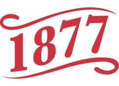
Οι απαρχές της εταιρείας
“Quaker Oats Company” -
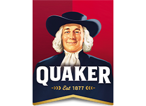
Ο Henry Parsons Crowell ιδρύει την εταιρεία, βασισμένος στην πεποίθηση πως όλοι, όπου κι αν βρίσκονται, πρέπει να έχουν πρόσβαση στην καλή διατροφή.
-
Συνεχίζουμε το όραμά του, απελευθερώνοντας τη διατροφική δύναμη της βρώμης, με την πεποίθησή του ως οδηγό μας.
Ανακαλύψτε πως ξεκίνησαν όλα.
-
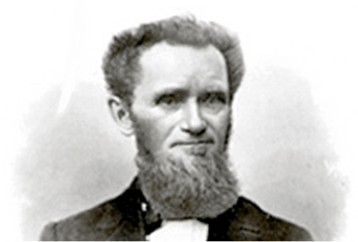
1850
Ο Ferdinand Schumacher ιδρύει τη German Mills American Cereal Company στο Akron του Οχάιο. Την ίδια περίοδο, ο John Stuart ιδρύει τη North Star Mills Company στον Καναδά.
-
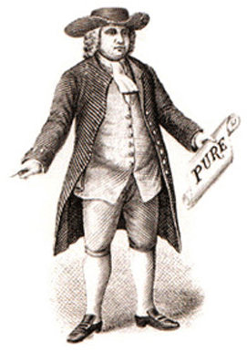
1877
Η German Mills American Cereal Company και η North Star Mills Company συγχωνεύονται σε μία εταιρεία που αργότερα θα μετονομαστεί σε “The Quaker Oats Company”. Το σήμα “Quaker Oats” γίνεται το πρώτο κατοχυρωμένο σήμα δημητριακών πρωινού. Το σήμα καταχωρήθηκε με τη γνωστή σε όλους μας φιγούρα του άντρα που βλέπετε στη φωτογραφία. Και οι δύο ιδιοκτήτες, Henry Seymour και William Heston, ισχυρίζονται ότι επέλεξαν το όνομα “Quaker” ως σύμβολο υψηλής ποιότητας και ειλικρινούς αξίας.
-
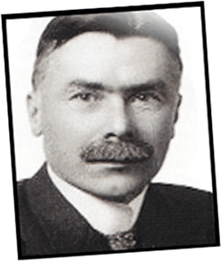
1881
Ο Henry Parsons Crowell αγοράζει τη χρεωκοπημένη “Quaker Mill” στη Ravenna του Oχάιο και μαζί το πιο πολύτιμο περιουσιακό της στοιχείο – τη μάρκα Quaker.
-
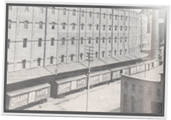
1888
Επτά από τα μεγαλύτερα Αμερικανικά αλεστήρια βρώμης, ενώνονται κάτω από την επωνυμία “American Cereal Company”
-
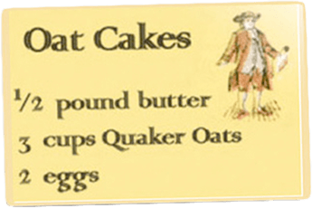
1901
H εταιρία “American Cereal Company” αλλάζει την ονομασία της σε “The Quaker Oats Company”.
-
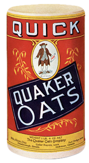
1915
Λανσάρεται η κλασική κυλινδρική συσκευασία
“Quaker Oats”. -
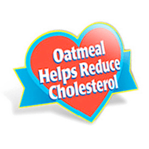
1997
Τα Quaker εισάγουν τον πρώτο -σχετικό με τρόφιμα- ισχυρισμό υγείας για τη βρώμη, εγκεκριμένο από την FDA. Ο νέος ισχυρισμός υγείας αφορά την καρδιά και αναγράφεται στην συσκευασία των αντίστοιχων δημητριακών βρώμης Quaker, αναφέροντας πως «Οι διαλυτές ίνες που περιέχονται στη βρώμη, ως μέρος μίας διατροφής χαμηλής σε κορεσμένα λιπαρά και χοληστερόλη, ενδέχεται να μειώσουν τον κίνδυνο καρδιοπάθειας.».
-
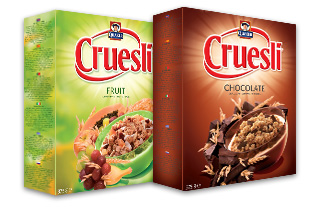
2007
Στην επέτειο των 130 χρόνων τους και μετά από πολυετή παρουσία στην ελληνική αγορά, η Tasty Foods αναλαμβάνει την διανομή των Quaker στην Ελλάδα και εισάγει τα Quaker Cruesli (που στη συνέχεια θα μετονομαστούν σε «Quaker Τραγανές Μπουκιές»).
-
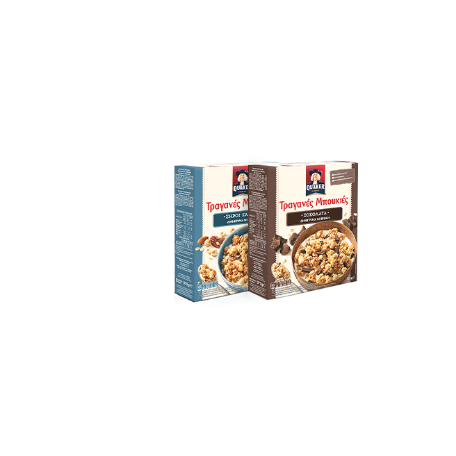
2011
Λανσάρονται στην Ελλάδα τα Quaker Τραγανές Μπουκιές, σημειώνοντας μεγάλη επιτυχία μέχρι σήμερα στην αγορά των δημητριακών.
-
2017
Τα Quaker γιορτάζουν την επέτειο των 140 χρόνων τους.